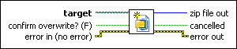

New Zip File VI
Owning Palette: Zip VIs
Requires: Base Development System
Creates a new empty zip file in the path that target specifies. The new file overwrites an existing file or produces a confirmation dialog based on the value of the confirm overwrite? control.

 Add to the block diagram Add to the block diagram |
 Find on the palette Find on the palette |